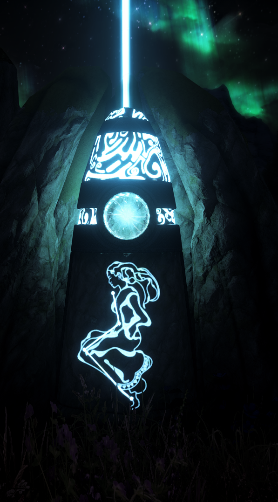

Introduction
Welcome to A Dragonborn's Fate, a fully modular vanilla-plus modding guide for Skyrim Special Edition!
IMPORTANT: Everything in this guide is written down for a reason! It is vital to read everything!
You can NOT skip any paragraphs/instructions and expect your game to function as it should.
Overview
A Dragonborn's Fate is a modding guide for Skyrim Special Edition that will carefully walk you through how to install all the mods you will need for a perfectly stable, smooth, and most importantly, enjoyable experience
The guide is highly accessible for everyone, no matter your modding experience. It is still incredibly important that you read all the instructions very carefully, even if you believe you are experienced enough to skip them. There are many small instructions that are vital for your game to function, and could be easily missed if you aren't careful. Although you don't need any modding experience to use this guide, it is expected for you to be relatively experienced with operating a computer in general.
About the Guide
Features
- Stability: The guide includes all essential stability enhancements and no placebo/dangerous mods.
- Performance: Every tool, setting, and mod in the guide has been carefully selected and play-tested to ensure maximum possible performance. No 4k texture mods, no ENBs, no poorly scripted weather mods, or any other un-optimized/broken mods.
- Better Gameplay: The guide includes many mods that greatly improve the gameplay, without drastically overhauling the core experience or straying away from the game's lore. The gameplay section is headlined by SimonMagus616's lightweight gameplay overhaul mods. The guide is specifically designed to fit any play-style and difficulty.
- Customizability: The guide is partially modular, some mods are optional as indicated by their yellow name. Load order will be provided and it will work perfectly even if you left out any mods. For information regarding adding your own mods, see the Additional Mods section below.
Additional Mods:
If you are looking to add more mods to your setup, please wait until after you have completed the guide, or else we will be unable to help you on Discord should you need it. Unfortunately, I do not have the time or energy to provide support for setups that install extra mods on top of the guide. If you do plan on adding mods after you finish the guide, please reference this list of mods that you should avoid using. I can not stress enough that it is only recommended to add your own mods if you are an experienced modder and know how to manually make conflict resolution patches and sort your load order! You can't just throw a bunch of mods on top of the guide without doing any conflict resolution or use automated tools and expect your game to function as intended! A reminder that I will not support setups that have added any mods.